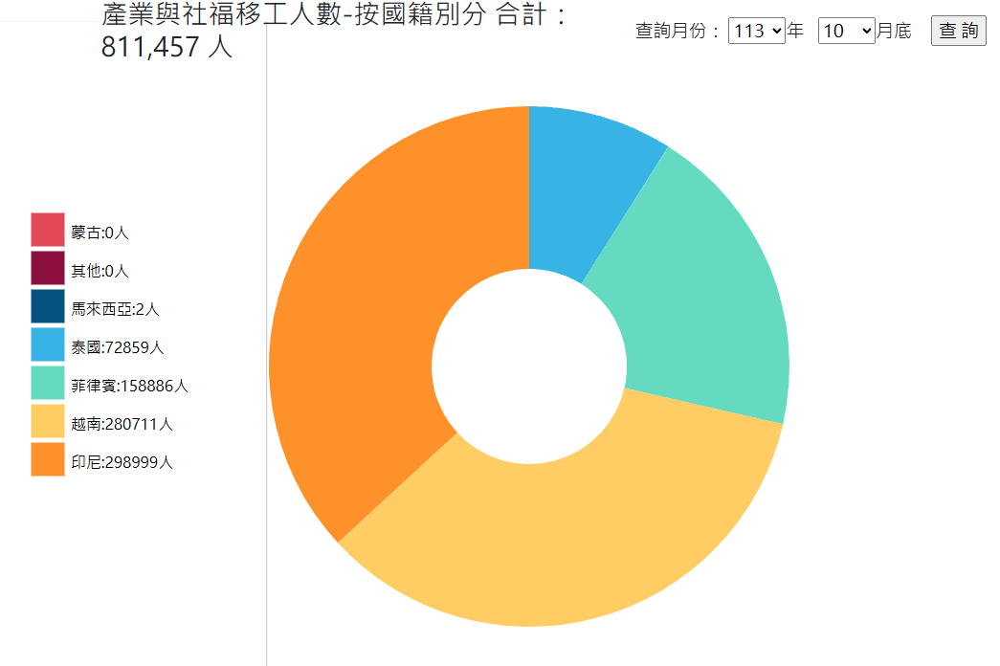

原始資料以及文章參考來源
全台移工將破80萬大關，電業也招手！失聯者逼近9萬人 這產業占最多 by
李瑋萱 (2024)
下圖為該報導所使用之勞動部提供的統計圖表

可以看到圖片為圓餅圖，並簡單透過顏色分類，右上有提供使用者年月份的資料篩選
資料來源為勞動部 - 勞動統計查詢網 - 產業及社福移工人數按國籍分
我們認為此份勞動部所製圖表有以下幾個問題
1.使用圓餅圖不利於使用者透過圖表比較數據差異，可能會有視覺上的困難
2.此表僅能呈現當月的人數統計，若需要觀察長期變化，則需額外進行多餘的紀錄
3.部分國籍在此圓餅圖中並沒有明顯占比，這可能會導致讀者閱讀上的疑惑
基於以上幾點，我們決定重繪圖表來表示資料